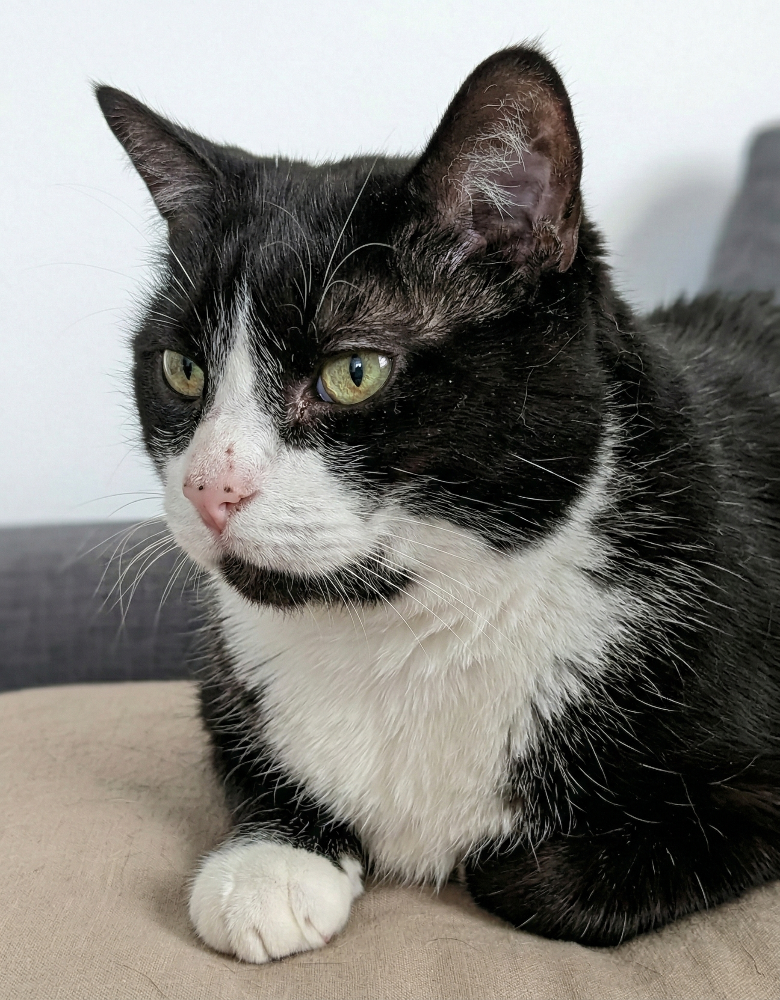

El Noble Michi, Sir de los AlquileresGato de 5 años, castrado, con seguro de hogar y humano con contrato fijo en Primor (7 años de antigüedad).
Castrado, rigurosamente vacunado y con microchip.
0% historial de arañazos.
Hipersensible al ruido, experto en no molestar.
Contrato indefinido de traductor senior en Primor.
¡Hola! Soy Michi. A diferencia de esos cachorros caóticos, yo ya he superado esa fase de inmadurez. Busco un hogar tranquilo donde mi humano pueda trabajar y pagar el alquiler, mientras yo superviso la calidad acústica de las siestas.
| Atributo Noble | Lord Michi | El Bribón Cachorro |
|---|---|---|
| Nivel de Energía | Chill / Zen | Huracán Categoría 5 |
| Uso del arenero | 100% Precisión comprobada | Aún aprendiendo |
| Interés decorativo | Nulo (cortinas aburridas) | Parque de atracciones |
| Horario Nocturno | Duerme intensamente | Parkour extremo 3:00 AM |
| Riesgo | 0% | Alto |